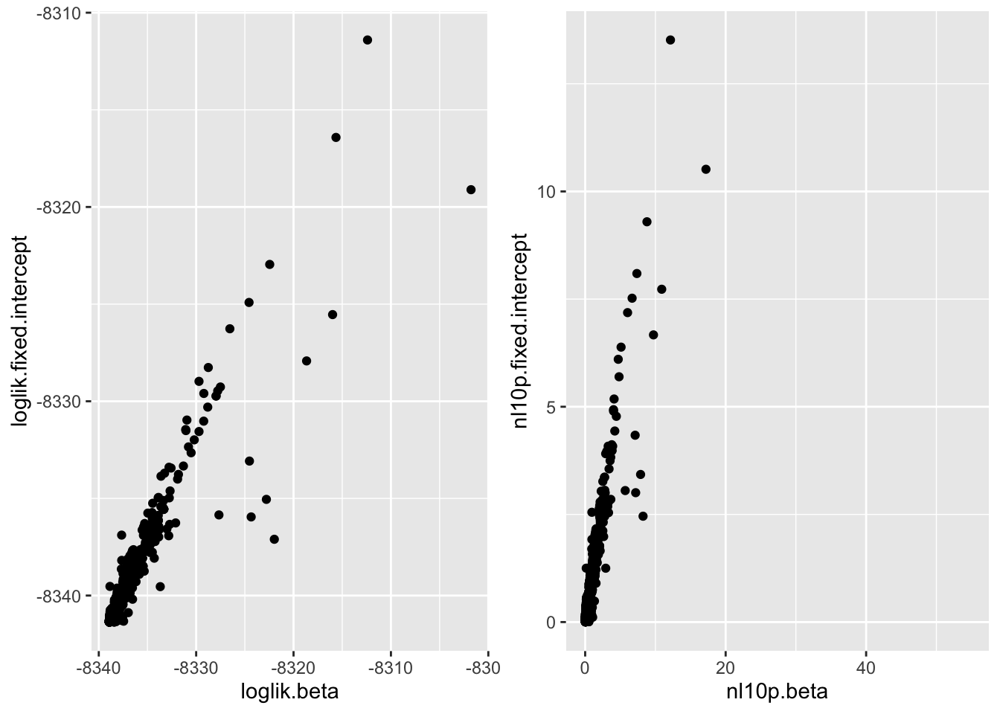
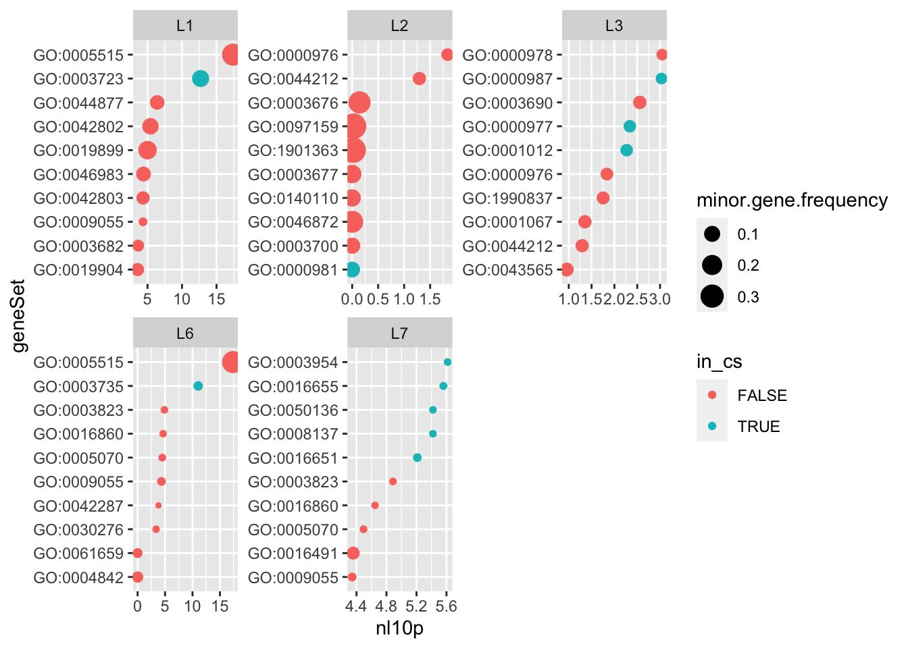
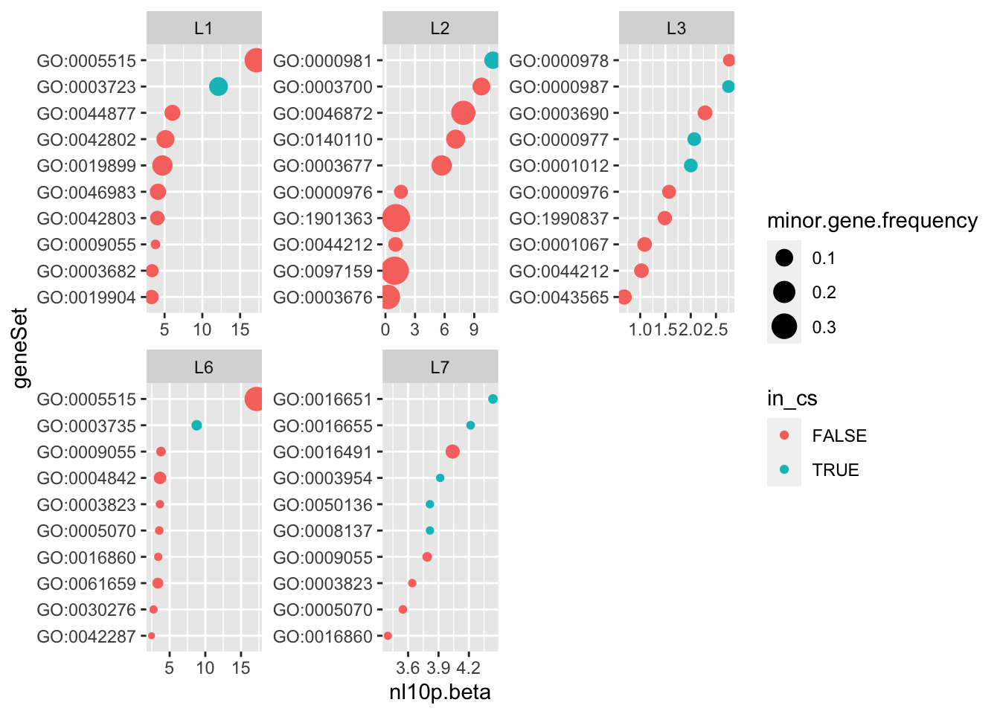
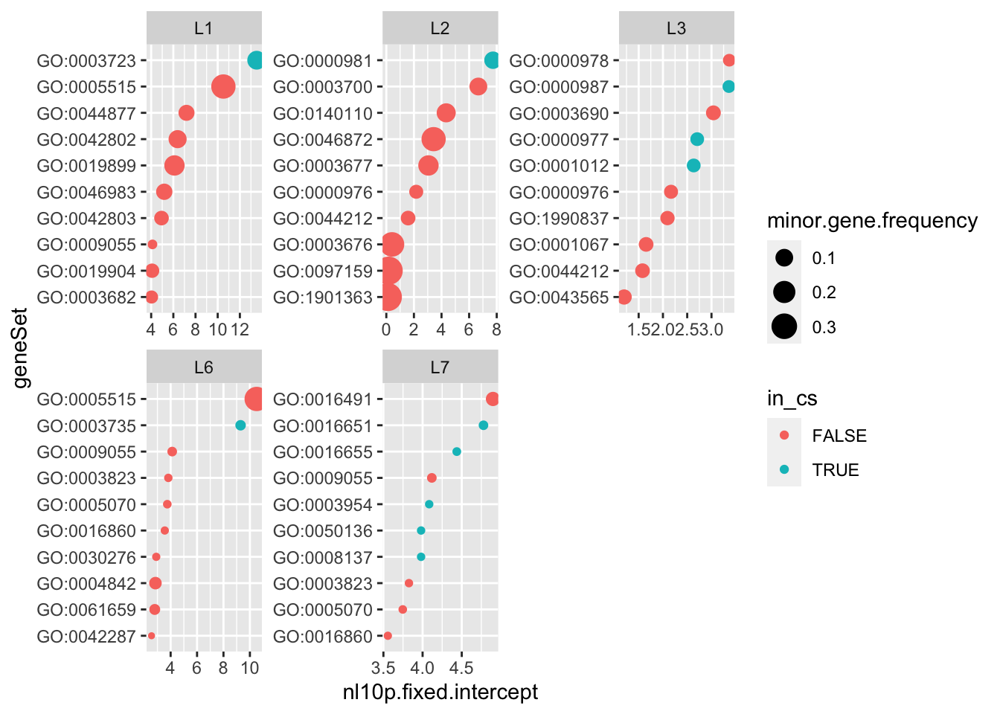
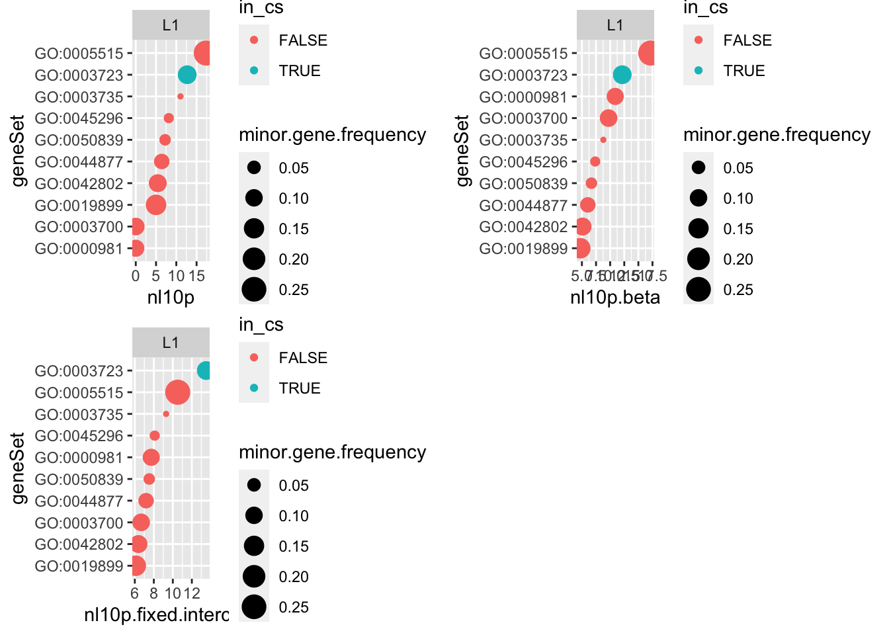
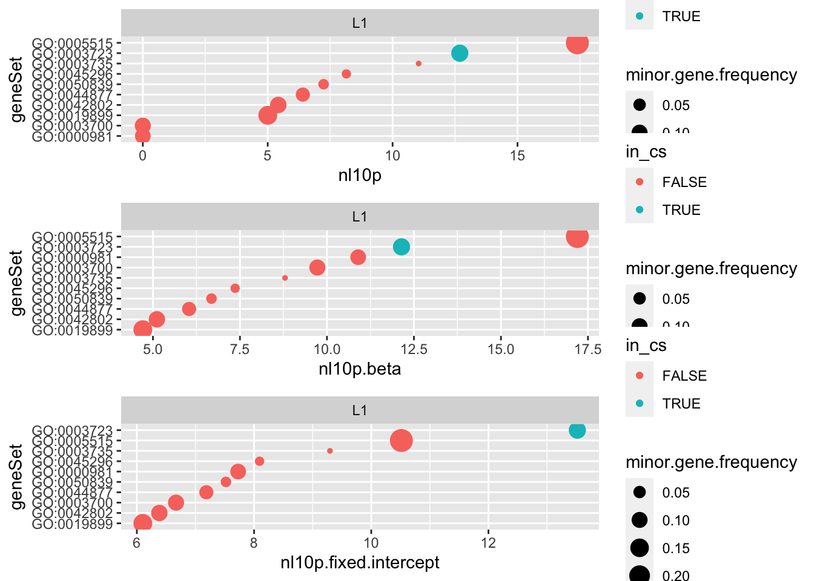
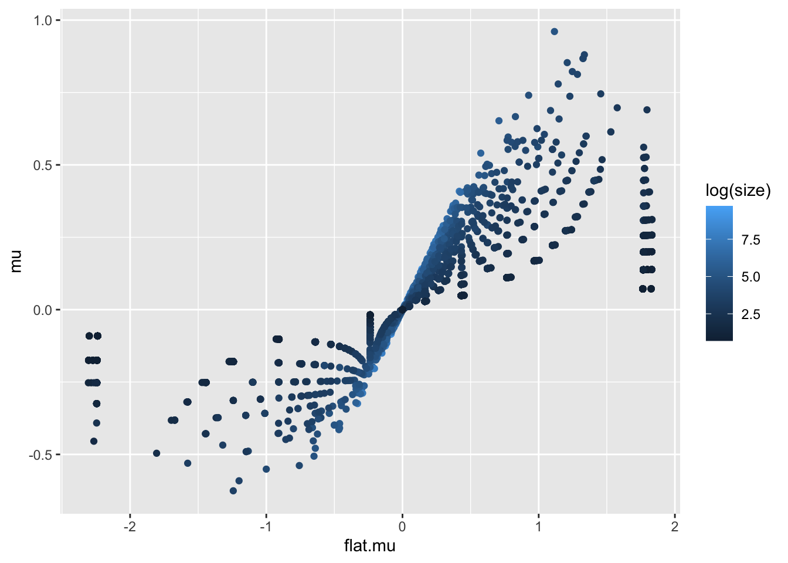
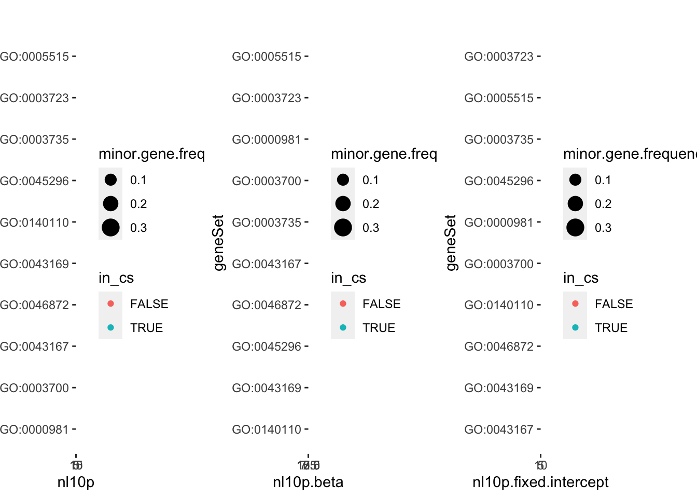
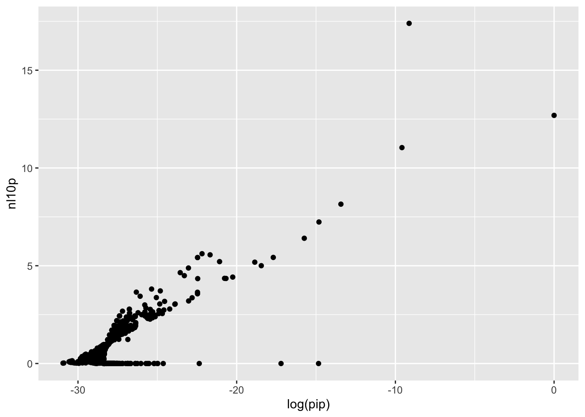
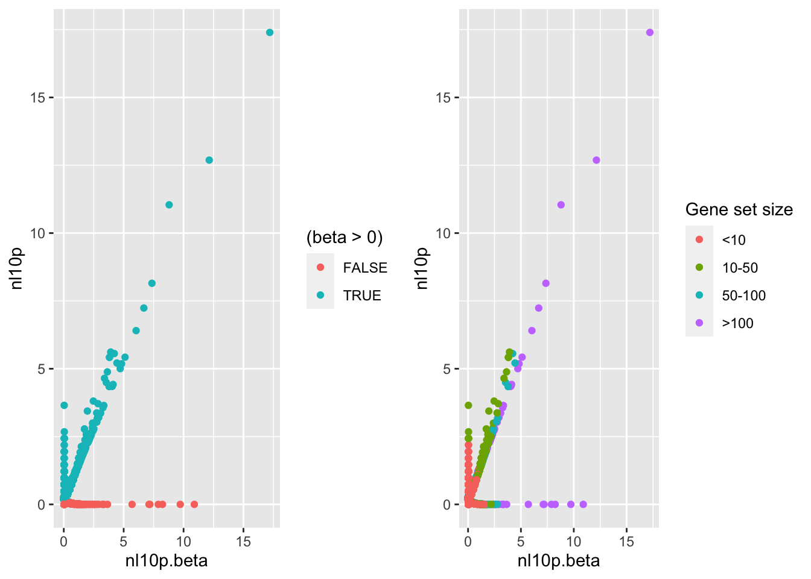

Single Cell PBMC Example: Shared intercept explains difference with univariate enrichment tests
karltayeb
2022-04-03
Last updated: 2022-04-08
Checks: 7 0
Knit directory: logistic-susie-gsea/
This reproducible R Markdown analysis was created with workflowr (version 1.7.0). The Checks tab describes the reproducibility checks that were applied when the results were created. The Past versions tab lists the development history.
Great! Since the R Markdown file has been committed to the Git repository, you know the exact version of the code that produced these results.
Great job! The global environment was empty. Objects defined in the global environment can affect the analysis in your R Markdown file in unknown ways. For reproduciblity it’s best to always run the code in an empty environment.
The command set.seed(20220105) was run prior to running the code in the R Markdown file. Setting a seed ensures that any results that rely on randomness, e.g. subsampling or permutations, are reproducible.
Great job! Recording the operating system, R version, and package versions is critical for reproducibility.
Nice! There were no cached chunks for this analysis, so you can be confident that you successfully produced the results during this run.
Great job! Using relative paths to the files within your workflowr project makes it easier to run your code on other machines.
Great! You are using Git for version control. Tracking code development and connecting the code version to the results is critical for reproducibility.
The results in this page were generated with repository version ed39993. See the Past versions tab to see a history of the changes made to the R Markdown and HTML files.
Note that you need to be careful to ensure that all relevant files for the analysis have been committed to Git prior to generating the results (you can use wflow_publish or wflow_git_commit). workflowr only checks the R Markdown file, but you know if there are other scripts or data files that it depends on. Below is the status of the Git repository when the results were generated:
Ignored files:
Ignored: .DS_Store
Ignored: .RData
Ignored: .Rhistory
Ignored: .Rproj.user/
Ignored: library/
Ignored: renv/library/
Ignored: renv/staging/
Ignored: staging/
Untracked files:
Untracked: .ipynb_checkpoints/
Untracked: Untitled.ipynb
Untracked: _targets.R
Untracked: _targets.html
Untracked: _targets.md
Untracked: _targets/
Untracked: _targets_r/
Untracked: analysis/deng_example.Rmd
Untracked: analysis/fetal_reference_cellid_gsea.Rmd
Untracked: analysis/fixed_intercept.Rmd
Untracked: analysis/iDEA_examples.Rmd
Untracked: analysis/latent_gene_list.Rmd
Untracked: analysis/libra_setup.Rmd
Untracked: analysis/linear_method_failure_modes.Rmd
Untracked: analysis/linear_regression_failure_regime.Rmd
Untracked: analysis/logistic_susie_veb_boost_vs_vb.Rmd
Untracked: analysis/logistic_susie_vis.Rmd
Untracked: analysis/references.bib
Untracked: analysis/simulations.Rmd
Untracked: analysis/test.Rmd
Untracked: analysis/wenhe_baboon_example.Rmd
Untracked: baboon_diet_cache/
Untracked: build_site.R
Untracked: cache/
Untracked: code/latent_logistic_susie.R
Untracked: code/logistic_susie_data_driver.R
Untracked: code/marginal_sumstat_gsea_collapsed.R
Untracked: code/sumstat_gsea.py
Untracked: data/adipose_2yr_topsnp.txt
Untracked: data/deng/
Untracked: data/fetal_reference_cellid_gene_sets.RData
Untracked: data/human_chimp_eb/
Untracked: data/pbmc-purified/
Untracked: data/wenhe_baboon_diet/
Untracked: docs.zip
Untracked: index.md
Untracked: latent_logistic_susie_cache/
Untracked: simulation_targets/
Untracked: single_cell_pbmc_cache/
Untracked: single_cell_pbmc_l1_cache/
Untracked: summary_stat_gsea_exploration_cache/
Untracked: summary_stat_gsea_sim_cache/
Unstaged changes:
Modified: _simulation_targets.R
Modified: _targets.Rmd
Modified: analysis/baboon_diet.Rmd
Modified: analysis/gseabenchmark_tcga.Rmd
Modified: analysis/single_cell_pbmc.Rmd
Deleted: analysis/summary_stat_gsea_univariate_simulations.Rmd
Modified: code/fit_baselines.R
Modified: code/fit_logistic_susie.R
Modified: code/fit_mr_ash.R
Modified: code/fit_susie.R
Modified: code/load_gene_sets.R
Modified: code/logistic_susie_vb.R
Modified: code/simulate_gene_lists.R
Modified: code/utils.R
Modified: target_components/factories.R
Modified: target_components/methods.R
Note that any generated files, e.g. HTML, png, CSS, etc., are not included in this status report because it is ok for generated content to have uncommitted changes.
These are the previous versions of the repository in which changes were made to the R Markdown (analysis/single_cell_pbmc_l1.Rmd) and HTML (docs/single_cell_pbmc_l1.html) files. If you’ve configured a remote Git repository (see ?wflow_git_remote), click on the hyperlinks in the table below to view the files as they were in that past version.
| File | Version | Author | Date | Message |
|---|---|---|---|---|
| Rmd | ed39993 | karltayeb | 2022-04-08 | wflow_publish(“analysis/single_cell_pbmc_l1.Rmd”) |
| html | 6b0a6a9 | karltayeb | 2022-04-08 | Build site. |
| Rmd | 03394b1 | karltayeb | 2022-04-08 | wflow_publish(“analysis/single_cell_pbmc_l1.Rmd”) |
| html | 63c1e2a | karltayeb | 2022-04-08 | Build site. |
| Rmd | dba1136 | karltayeb | 2022-04-08 | wflow_publish(“analysis/single_cell_pbmc_l1.Rmd”) |
| html | c9fd3c7 | karltayeb | 2022-04-07 | Build site. |
| Rmd | 2efbcd9 | karltayeb | 2022-04-07 | wflow_publish(“analysis/single_cell_pbmc_l1.Rmd”) |
| html | c5c6f9a | karltayeb | 2022-04-07 | Build site. |
| Rmd | 6cd8628 | karltayeb | 2022-04-07 | wflow_publish(“analysis/single_cell_pbmc_l1.Rmd”) |
| html | 53ac4cb | karltayeb | 2022-04-07 | Build site. |
| Rmd | 9e9ced5 | karltayeb | 2022-04-07 | wflow_publish(“analysis/single_cell_pbmc_l1.Rmd”) |
Summary
When we fit logistic SuSiE, with \(L=1\) (SER) or \(L=10\) we often see that the gene sets selected in the credible sets are not the gene sets with the highest marginal significance (by hypergeometric test p-value and univariate logistic regression p-value from glm)
We explore if this is driven by (1) shrinkage of the effects or (2) the shared intercept term in the SER. If you go back and fit the univariate logistic regression with the intercept fixed to the SER estimate, we find that SER and univariate logistic regression agree.
We can also see that there are differences between the hypergeometric p-values and the logistic regression p-values. But these are explained by negative effect sizes (depletion) in the logistic regression and small, highly observed gene sets (which are an edge case for the hypergeometric test, I suppose).
Finally, we can’t rule out the variational approximation causing some differences, but we don’t need to blame the approximation in this case.
library(GSEABenchmarkeR)
library(EnrichmentBrowser)
library(tidyverse)
library(susieR)
library(DT)
library(kableExtra)
source('code/load_gene_sets.R')
source('code/utils.R')
source('code/logistic_susie_vb.R')
source('code/logistic_susie_veb_boost.R')
source('code/latent_logistic_susie.R')gs_list <- WebGestaltR::listGeneSet()
gobp <- loadGeneSetX('geneontology_Biological_Process', min.size=50) # just huge number of gene sets
gobp_nr <- loadGeneSetX('geneontology_Biological_Process_noRedundant', min.size=1)
gomf <- loadGeneSetX('geneontology_Molecular_Function', min.size=1)
kegg <- loadGeneSetX('pathway_KEGG', min.size=1)
reactome <- loadGeneSetX('pathway_Reactome', min.size=1)
wikipathway_cancer <- loadGeneSetX('pathway_Wikipathway_cancer', min.size=1)
wikipathway <- loadGeneSetX('pathway_Wikipathway', min.size=1)
genesets <- list(
gobp=gobp,
gobp_nr=gobp_nr,
gomf=gomf,
kegg=kegg,
reactome=reactome,
wikipathway_cancer=wikipathway_cancer,
wikipathway=wikipathway
)load('data/pbmc-purified/deseq2-pbmc-purified.RData')convert_labels <- function(y, from='SYMBOL', to='ENTREZID'){
hs <- org.Hs.eg.db::org.Hs.eg.db
gene_symbols <- names(y)
symbol2entrez <- AnnotationDbi::select(
hs, keys=gene_symbols, columns=c(to, from), keytype = from)
symbol2entrez <- symbol2entrez[!duplicated(symbol2entrez[[from]]),]
symbol2entrez <- symbol2entrez[!is.na(symbol2entrez[[to]]),]
symbol2entrez <- symbol2entrez[!is.na(symbol2entrez[[from]]),]
rownames(symbol2entrez) <- symbol2entrez[[from]]
ysub <- y[names(y) %in% symbol2entrez[[from]]]
names(ysub) <- symbol2entrez[names(ysub),][[to]]
return(ysub)
}
convert_labels = partial(convert_labels, from='ENSEMBL')
#' take gene level results and put them in a standard format
#' a named list with ENTREZID names and gene level stats
#' target_col is the column to extract
#' from is the source gene label to convert to ENTREZID
clean_gene_list = function(data, target_col){
target_col = sym(target_col)
data %>%
as.data.frame %>%
rownames_to_column('gene') %>%
dplyr::select(gene, !!target_col) %>%
filter(!is.na(!!target_col)) %>%
mutate(y = !!target_col) %>%
select(gene, y) %>%
tibble2namedlist %>%
convert_labels()
}
clean_gene_list = partial(clean_gene_list, target_col='padj')
#' makes a binary list from table like data
get_y = function(data, thresh=1e-4){
data %>%
clean_gene_list() %>%
{
y <- as.integer(. < thresh)
names(y) <- names(.)
y
}
}
get_y(deseq$`CD19+ B`, 1e-40) %>% mean()Loading required package: DESeq2'select()' returned 1:many mapping between keys and columns[1] 0.1473949#' fit logistic regression to each gene set individually
do_marginal_logistic_regression = function(db,
celltype,
thresh,
glm.args = list(family='binomial')){
gs <- genesets[[db]]
data <- deseq[[celltype]]
y <- get_y(data, thresh)
u <- process_input(gs$X, y) # subset to common genes
n <- dim(u$X)[1] # number of genes
p <- dim(u$X)[2] # number of gene sets
f <- exec(partial, glm, !!!glm.args)
library(tictoc)
tic()
marginal.fit <- purrr::map(1:p, ~ f(u$y ~ u$X[,.x]))
toc()
names(marginal.fit) <- colnames(u$X)[1:p]
return(list(
fit = marginal.fit,
db = db, celltype = celltype, thresh = thresh))
}
#' fit logistic susie, and hypergeometric test
do_logistic_susie = function(db, celltype, thresh, susie.args=NULL){
gs <- genesets[[db]]
data <- deseq[[celltype]]
y <- get_y(data, thresh)
u <- process_input(gs$X, y) # subset to common genes
if(is.null(susie.args)){
susie.args = list(
L=10, init.intercept=0, verbose=1, maxit=100, standardize=TRUE)
}
vb.fit <- exec(logistic.susie, u$X, u$y, !!!susie.args)
#' hypergeometric test
ora <- tibble(
geneSet = colnames(u$X),
geneListSize = sum(u$y),
geneSetSize = colSums(u$X),
overlap = (u$y %*% u$X)[1,],
nGenes = length(u$y),
propInList = overlap / geneListSize,
propInSet = overlap / geneSetSize,
oddsRatio = (overlap / (geneListSize - overlap)) / (
(geneSetSize - overlap) / (nGenes - geneSetSize + overlap)),
pValueHypergeometric = phyper(
overlap-1, geneListSize, nGenes - geneListSize, geneSetSize, lower.tail= FALSE),
nl10p = -log10(pValueHypergeometric),
db = db,
celltype = celltype,
thresh = thresh
) %>%
left_join(gs$geneSet$geneSetDes)
return(list(
fit = vb.fit,
ora = ora,
db = db, celltype = celltype, thresh = thresh))
}
#' fit logistic susie, and hypergeometric test
do_logistic_susie_veb_boost = function(db, celltype, thresh, susie.args=NULL){
gs <- genesets[[db]]
data <- deseq[[celltype]]
y <- get_y(data, thresh)
u <- process_input(gs$X, y) # subset to common genes
X <- u$X
dim(X[,(colSums(X) > 0 & colSums(X) < dim(X)[1])])
dim(X)
if(is.null(susie.args)){
susie.args = list(L=10)
}
vb.fit <- exec(logistic.susie.veb.boost, u$X, u$y, !!!susie.args)
veb.fit <- VEB.Boost::veb_boost_stumps(
u$X, u$y, k=2,
family='binomial',
include_stumps = F,
growTree=F,
changeToConstant=F
)
sum(colSums(u$X) == 12210)
veb.fit$X
alpha <- t(do.call(cbind, lapply(veb.fit$leaves, function(x) x$currentFit$alpha)))
mu <- t(do.call(cbind, lapply(veb.fit$leaves, function(x) x$currentFit$mu)))
mu2 <- t(do.call(cbind, lapply(veb.fit$leaves, function(x) x$currentFit$mu2)))
elbo <- veb.fit$ELBO_progress[[2]]
res <- list(alpha=alpha, mu=mu, mu2=mu2, elbo=elbo, veb.fit=veb.fit)
class(res) <- 'susie'
colnames(res$alpha) <- colnames(u$X)
colnames(res$mu) <- colnames(X)
res$pip <- susieR::susie_get_pip(res)
names(res$pip) <- colnames(X)
res$sets <- susieR::susie_get_cs(res, X=X)
#' hypergeometric test
ora <- tibble(
geneSet = colnames(u$X),
geneListSize = sum(u$y),
geneSetSize = colSums(u$X),
overlap = (u$y %*% u$X)[1,],
nGenes = length(u$y),
propInList = overlap / geneListSize,
propInSet = overlap / geneSetSize,
oddsRatio = (overlap / (geneListSize - overlap)) / (
(geneSetSize - overlap) / (nGenes - geneSetSize + overlap)),
pValueHypergeometric = phyper(
overlap-1, geneListSize, nGenes - geneListSize, geneSetSize, lower.tail= FALSE),
nl10p = -log10(pValueHypergeometric),
db = db,
celltype = celltype,
thresh = thresh
) %>%
left_join(gs$geneSet$geneSetDes)
return(list(
fit = vb.fit,
ora = ora,
db = db, celltype = celltype, thresh = thresh))
}
get_credible_set_summary = function(res){
gs <- genesets[[res$db]]
data <- deseq[[res$celltype]]
#' report top 50 elements in cs
credible.set.summary <- t(res$fit$alpha) %>%
data.frame() %>%
rownames_to_column(var='geneSet') %>%
rename_with(~str_replace(., 'X', 'L')) %>%
rename(L1 = 2) %>% # rename deals with L=1 case
pivot_longer(starts_with('L'), names_to='component', values_to = 'alpha') %>%
arrange(component, desc(alpha)) %>%
dplyr::group_by(component) %>%
filter(row_number() < 50) %>%
mutate(alpha_rank = row_number(), cumalpha = c(0, head(cumsum(alpha), -1))) %>%
mutate(in_cs = cumalpha < 0.95) %>%
mutate(active_cs = component %in% names(res$fit$sets$cs)) %>%
left_join(res$ora) %>%
left_join(gs$geneSet$geneSetDes)
return(credible.set.summary)
}
get_gene_set_summary = function(res){
gs <- genesets[[res$db]]
#' map each gene set to the component with top alpha
#' report pip
res$fit$pip %>%
as_tibble(rownames='geneSet') %>%
rename(pip=value) %>%
mutate(beta=colSums(res$fit$alpha * res$fit$mu)) %>%
left_join(res$ora) %>%
left_join(gs$geneSet$geneSetDes)
}do.or.plot = function(res,
ct=NULL,
g=NULL,
x='oddsRatio',
s='geneSetSize',
c='in_cs'){
col_sym = sym(x)
gene.set.order <- res$geneset.summary %>%
filter(if(!is.null(ct)) celltype == ct else TRUE) %>%
filter(if(!is.null(g)) db == g else TRUE) %>%
arrange(db, !!col_sym) %>%
.$geneSet %>%
unique()
size_sym = sym(s)
color_sym = sym(c)
plot <- res$cs.summary %>%
filter(if(!is.null(ct)) celltype == ct else TRUE) %>%
filter(if(!is.null(g)) db == g else TRUE) %>%
filter(active_cs, alpha_rank <= 10) %>%
mutate(geneSet=factor(geneSet, levels=gene.set.order)) %>%
ggplot(aes(x=!!col_sym, y=geneSet, color=!!color_sym, size=!!size_sym)) +
geom_point() +
facet_wrap(vars(component), scale='free')
return(plot)
}#' fit logistic regression to each gene set individually
summarize_fit = function(glm.fitted){
coef = summary(glm.fitted)$coefficients
return(list(
logistic.intercept = coef[1, 1],
logistic.intercept.se = coef[1,2],
logistic.effect = coef[2,1],
logistic.effect.se = coef[2,2],
logistic.p.value = coef[2,4],
logistic.regression.nl10p = -log10(coef[2,4] + 1e-20),
logistic.aic = glm.fitted$aic
))
}
summarize_fit = function(glm.fitted){
coef = summary(glm.fitted)$coefficients
return(list(
coef = coef,
logistic.aic = glm.fitted$aic
))
}
do_marginal_logistic_regression = function(db,
celltype,
thresh,
glm.args = list(family='binomial'), intercept=T){
gs <- genesets[[db]]
data <- deseq[[celltype]]
y <- get_y(data, thresh)
u <- process_input(gs$X, y) # subset to common genes
n <- dim(u$X)[1] # number of genes
p <- dim(u$X)[2] # number of gene sets
f <- exec(partial, glm, !!!glm.args)
library(tictoc)
tic()
if(intercept){
marginal.fit <- purrr::map(1:p, ~ possibly(summarize_fit, NULL)(f(u$y ~ u$X[,.x])))
} else {
marginal.fit <- purrr::map(1:p, ~ possibly(summarize_fit, NULL)(f(u$y ~ u$X[,.x] - 1)))
}
names(marginal.fit) <- colnames(u$X)[1:p]
toc()
marginal <- tibble(
geneSet = names(marginal.fit),
fit = marginal.fit) %>%
unnest_wider(fit) %>%
mutate(
db = db,
celltype = celltype,
thresh = thresh
)
return(marginal)
}
marginal_tbl <- xfun::cache_rds({
do_marginal_logistic_regression('gomf', 'CD19+ B', 1e-4)},
dir = 'cache/single_cell_pbmc_l1/',
file='fit.logistic.regression')# L =10
susie.args = list(L=10, standardize=F, verbose=T)
susie.l10 = do_logistic_susie('gomf', 'CD19+ B', 1e-4, susie.args)'select()' returned 1:many mapping between keys and columns
convergedJoining, by = "geneSet"res.l10 = list(
cs.summary = get_credible_set_summary(susie.l10),
geneset.summary = get_gene_set_summary(susie.l10)
)Joining, by = "geneSet"
Joining, by = c("geneSet", "description")
Joining, by = "geneSet"
Joining, by = c("geneSet", "description")# L =1
susie.args <- list(L=1, standardize=F, verbose=T)
susie.l1 <- do_logistic_susie('gomf', 'CD19+ B', 1e-4, susie.args)'select()' returned 1:many mapping between keys and columns
converged
Joining, by = "geneSet"res.l1 <- list(
cs.summary = get_credible_set_summary(susie.l1),
geneset.summary = get_gene_set_summary(susie.l1)
)Joining, by = "geneSet"
Joining, by = c("geneSet", "description")
Joining, by = "geneSet"
Joining, by = c("geneSet", "description")# L =1 "flat" prior
susie.args <- list(L=1, estimate_prior_variance = F, V= 1000, standardize=F, verbose=T)
susie.l1.flat <- do_logistic_susie('gomf', 'CD19+ B', 1e-4, susie.args)'select()' returned 1:many mapping between keys and columns
converged
Joining, by = "geneSet"res.l1.flat <- list(
cs.summary = get_credible_set_summary(susie.l1.flat),
geneset.summary = get_gene_set_summary(susie.l1.flat)
)Joining, by = "geneSet"
Joining, by = c("geneSet", "description")
Joining, by = "geneSet"
Joining, by = c("geneSet", "description")# L = 1 "flat" prior
susie.args <- list(L=1)
susie.l1.veb <- do_logistic_susie_veb_boost('gomf', 'CD19+ B', 1e-4, susie.args)'select()' returned 1:many mapping between keys and columns
Loading required package: VEB.Boost
Joining, by = "geneSet"res.l1.veb <- list(
cs.summary = get_credible_set_summary(susie.l1.veb),
geneset.summary = get_gene_set_summary(susie.l1.veb)
)Joining, by = "geneSet"
Joining, by = c("geneSet", "description")
Joining, by = "geneSet"
Joining, by = c("geneSet", "description")# L = 10 "flat" prior
susie.args <- list(L=1)
susie.l10.veb <- do_logistic_susie_veb_boost('gomf', 'CD19+ B', 1e-4)'select()' returned 1:many mapping between keys and columns
Joining, by = "geneSet"res.l10.veb <- list(
cs.summary = get_credible_set_summary(susie.l10.veb),
geneset.summary = get_gene_set_summary(susie.l10.veb)
)Joining, by = "geneSet"
Joining, by = c("geneSet", "description")
Joining, by = "geneSet"
Joining, by = c("geneSet", "description")# fixed intercept model
intercept <- susie.l1$fit$intercept
n <- susie.l1$fit$dat$y %>% length()
marginal.fixed.intercept <- xfun::cache_rds({
glm.args <- list(family=binomial(), offset=rep(intercept, n))
do_marginal_logistic_regression(
'gomf', 'CD19+ B', 1e-4, glm.args = glm.args, intercept=F)},
dir = 'cache/single_cell_pbmc_l1/',
file='fit.logistic.regression.fixed.intercept')
marginal.fixed.intercept <-
marginal.fixed.intercept %>%
mutate(
nl10p.fixed.intercept = -log10(marginal.fixed.intercept$coef[, 4]),
loglik.fixed.intercept = -0.5 *(logistic.aic - 4)
)
marginal <-
marginal_tbl %>%
filter(row_number() > 1) %>%
rowwise() %>%
mutate(
nl10p.beta = -log10(tail(coef[,4], 1))
) %>% ungroup() %>%
mutate(
loglik.beta = -0.5 *(logistic.aic - 4)
) %>%
select(-c(coef, logistic.aic)) %>%
left_join(marginal.fixed.intercept %>% select(-coef))Joining, by = c("geneSet", "db", "celltype", "thresh")p1 <- marginal %>%
ggplot(aes(x=loglik.beta, y=loglik.fixed.intercept)) +
geom_point()
p2 <- marginal %>%
ggplot(aes(x=nl10p.beta, y=nl10p.fixed.intercept)) +
geom_point()
cowplot::plot_grid(p1, p2)Warning: Removed 99 rows containing missing values (geom_point).
| Version | Author | Date |
|---|---|---|
| 63c1e2a | karltayeb | 2022-04-08 |
res.l10$cs.summary <-
res.l10$cs.summary %>%
left_join(marginal, by = c('geneSet', 'db', 'celltype')) %>%
mutate(
minor.gene.frequency = geneSetSize / nGenes,
minor.gene.frequency = pmin(1 - minor.gene.frequency, minor.gene.frequency)
)
res.l10$geneset.summary <-
res.l10$geneset.summary %>%
left_join(marginal, by = c('geneSet', 'db', 'celltype')) %>%
mutate(
minor.gene.frequency = geneSetSize / nGenes,
minor.gene.frequency = pmin(1 - minor.gene.frequency, minor.gene.frequency)
)
res.l1$cs.summary <-
res.l1$cs.summary %>%
left_join(marginal, by = c('geneSet', 'db', 'celltype')) %>%
mutate(
minor.gene.frequency = geneSetSize / nGenes,
minor.gene.frequency = pmin(1 - minor.gene.frequency, minor.gene.frequency)
)
res.l1$geneset.summary <-
res.l1$geneset.summary %>%
left_join(marginal, by = c('geneSet', 'db', 'celltype')) %>%
mutate(
minor.gene.frequency = geneSetSize / nGenes,
minor.gene.frequency = pmin(1 - minor.gene.frequency, minor.gene.frequency)
)
res.l1.flat$cs.summary <-
res.l1.flat$cs.summary %>%
left_join(marginal, by = c('geneSet', 'db', 'celltype')) %>%
mutate(
minor.gene.frequency = geneSetSize / nGenes,
minor.gene.frequency = pmin(1 - minor.gene.frequency, minor.gene.frequency)
)
res.l1.flat$geneset.summary <-
res.l1.flat$geneset.summary %>%
left_join(marginal, by = c('geneSet', 'db', 'celltype')) %>%
mutate(
minor.gene.frequency = geneSetSize / nGenes,
minor.gene.frequency = pmin(1 - minor.gene.frequency, minor.gene.frequency)
)
res.l1.veb$cs.summary <-
res.l1.veb$cs.summary %>%
left_join(marginal, by = c('geneSet', 'db', 'celltype')) %>%
mutate(
minor.gene.frequency = geneSetSize / nGenes,
minor.gene.frequency = pmin(1 - minor.gene.frequency, minor.gene.frequency)
)
res.l1.veb$geneset.summary <-
res.l1.veb$geneset.summary %>%
left_join(marginal, by = c('geneSet', 'db', 'celltype')) %>%
mutate(
minor.gene.frequency = geneSetSize / nGenes,
minor.gene.frequency = pmin(1 - minor.gene.frequency, minor.gene.frequency)
)
res.l10.veb$cs.summary <-
res.l10.veb$cs.summary %>%
left_join(marginal, by = c('geneSet', 'db', 'celltype')) %>%
mutate(
minor.gene.frequency = geneSetSize / nGenes,
minor.gene.frequency = pmin(1 - minor.gene.frequency, minor.gene.frequency)
)
res.l10.veb$geneset.summary <-
res.l10.veb$geneset.summary %>%
left_join(marginal, by = c('geneSet', 'db', 'celltype')) %>%
mutate(
minor.gene.frequency = geneSetSize / nGenes,
minor.gene.frequency = pmin(1 - minor.gene.frequency, minor.gene.frequency)
)\(L=10\)
The gene set selected by logistic susie with \(L=10\) are not the gene sets with the smallest p-value from a hypergeometric test. This is partially remedied by ranking by the p-values (\(L2\) get’s fixed) from logistic regression. If we fit the logistic regression with a fixed intercept we also recover \(L1\). We don’t get the other components, but it’s possible the effects estimates are not independent. Let’s look at the SER case.
do.or.plot(res.l10, x='nl10p', s='minor.gene.frequency')
| Version | Author | Date |
|---|---|---|
| 53ac4cb | karltayeb | 2022-04-07 |
do.or.plot(res.l10, x='nl10p.beta', s='minor.gene.frequency')
do.or.plot(res.l10, x='nl10p.fixed.intercept', s='minor.gene.frequency')
| Version | Author | Date |
|---|---|---|
| 63c1e2a | karltayeb | 2022-04-08 |
\(L=1\)
Consistent with \(L=10\) only when we fix the regression intercept do we get pvalues that agree with the PIPs.
p1 <- do.or.plot(res.l1, x='nl10p', s='minor.gene.frequency')
p2 <-do.or.plot(res.l1, x='nl10p.beta', s='minor.gene.frequency')
p3 <-do.or.plot(res.l1, x='nl10p.fixed.intercept', s='minor.gene.frequency')
cowplot::plot_grid(p1, p2, p3)
\(L=1\) Flat
I also wanted to see if shrinkage on the effect estimates was causing any differences. The enrichment plot looks remarkable similar but if we plot mu from SER we see that the effects are shrunk (although that’s a pretty funky shape– it looks like smaller gene sets experience stronger shrinkage which makes sense).
p1 <- do.or.plot(res.l1.flat, x='nl10p', s='minor.gene.frequency')
p2 <-do.or.plot(res.l1.flat, x='nl10p.beta', s='minor.gene.frequency')
p3 <-do.or.plot(res.l1.flat, x='nl10p.fixed.intercept', s='minor.gene.frequency')
cowplot::plot_grid(p1, p2, p3, nrow = 1)
| Version | Author | Date |
|---|---|---|
| 63c1e2a | karltayeb | 2022-04-08 |
sizes <- colSums(genesets$gomf$X[, colnames(susie.l1$fit$mu)])
tbl <- tibble(
flat.mu=susie.l1.flat$fit$mu[1,],
mu=susie.l1$fit$mu[1,],
size = sizes)
tbl %>%
ggplot(aes(y=mu, x=flat.mu, color=log(size))) +
geom_point()
\(L=1\) VEB.Boost (estimate intercept per effect)
p1 <- do.or.plot(res.l1.veb, x='nl10p', s='minor.gene.frequency')
p2 <-do.or.plot(res.l1.veb, x='nl10p.beta', s='minor.gene.frequency')
p3 <-do.or.plot(res.l1.veb, x='nl10p.fixed.intercept', s='minor.gene.frequency')
cowplot::plot_grid(p1, p2, p3, nrow = 1)
| Version | Author | Date |
|---|---|---|
| 63c1e2a | karltayeb | 2022-04-08 |
\(L=10\) VEB.Boost (estimate intercept per effect)
p1 <- do.or.plot(res.l10.veb, x='nl10p', s='minor.gene.frequency')
p2 <-do.or.plot(res.l10.veb, x='nl10p.beta', s='minor.gene.frequency')
p3 <-do.or.plot(res.l10.veb, x='nl10p.fixed.intercept', s='minor.gene.frequency')
cowplot::plot_grid(p1, p2, p3, ncol = 1)
| Version | Author | Date |
|---|---|---|
| 63c1e2a | karltayeb | 2022-04-08 |
Some other plots
log PIPs vs nl10p from hypergeometric test, logitic regression, and fixed intercept regression
p1 <- res.l1$geneset.summary %>% ggplot(aes(x=log(pip), y=nl10p)) + geom_point()
p2 <- res.l1$geneset.summary %>% ggplot(aes(x=log(pip), y=nl10p.beta)) + geom_point()
p3 <- res.l1$geneset.summary %>% ggplot(aes(x=log(pip), y=nl10p.fixed.intercept)) + geom_point()
cowplot::plot_grid(p1, p2, p3, nrow = 1)
| Version | Author | Date |
|---|---|---|
| 63c1e2a | karltayeb | 2022-04-08 |
There are some discrepancies between the pvalues from different methods. One class of differences are where SuSiE estimates a negative effect. This depletion is not detected by the one-sided hypergeometric test. For some small, highly observed, gene sets, the hypergeometric test is giving a much stronger pvalue than the logistic regression.
p1 <- res.l1$geneset.summary %>% ggplot(aes(x=nl10p.beta, y=nl10p, color=(beta > 0))) + geom_point()
p2 <- res.l1$geneset.summary %>%
mutate(geneSetSize = case_when(
geneSetSize < 10 ~ '<10',
geneSetSize < 50 ~ '10-50',
geneSetSize < 100 ~ '50-100',
TRUE ~ '>100')) %>%
ggplot(aes(x=nl10p.beta, y=nl10p, color=factor(geneSetSize, levels = c('<10', '10-50', '50-100', '>100')))) +
geom_point() +
scale_color_discrete('Gene set size')
cowplot::plot_grid(p1, p2, nrow = 1)
| Version | Author | Date |
|---|---|---|
| 63c1e2a | karltayeb | 2022-04-08 |
knitr::knit_exit()